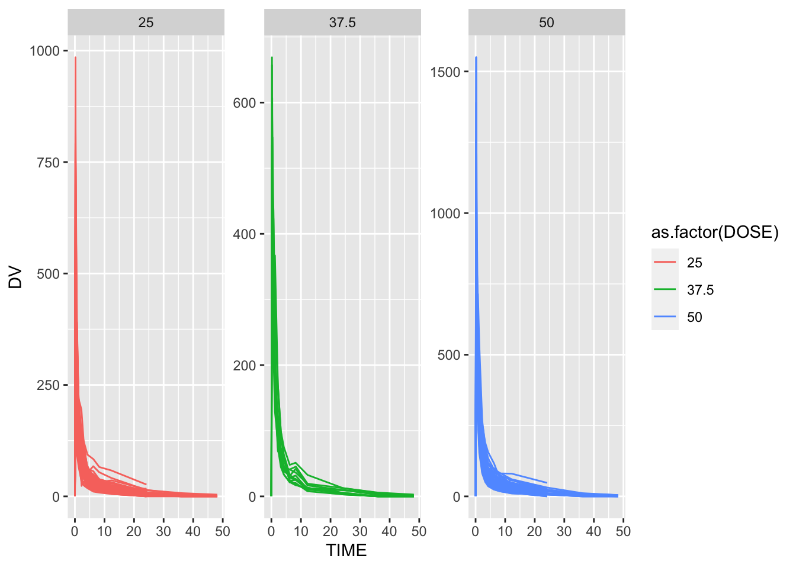
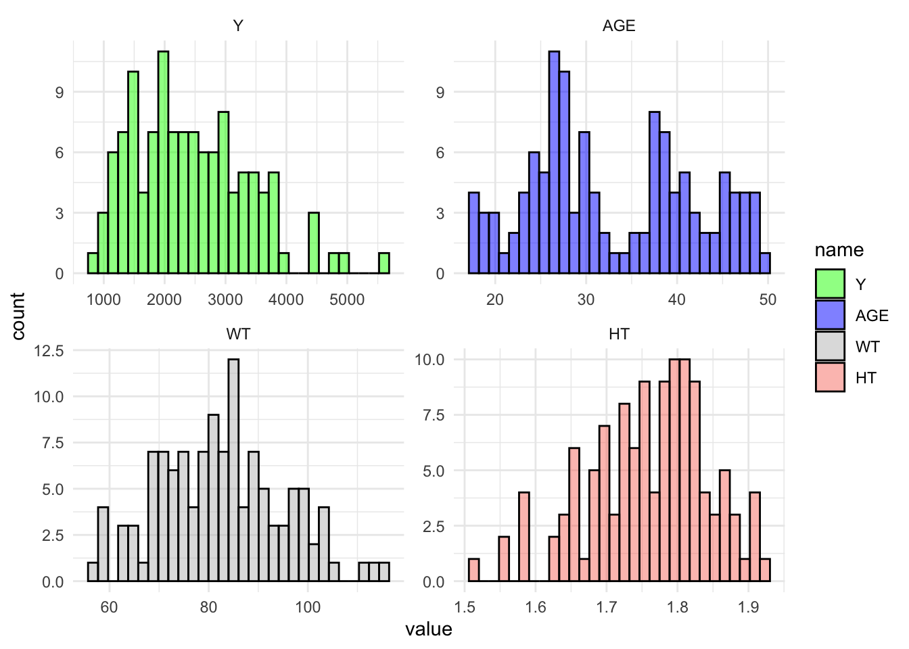
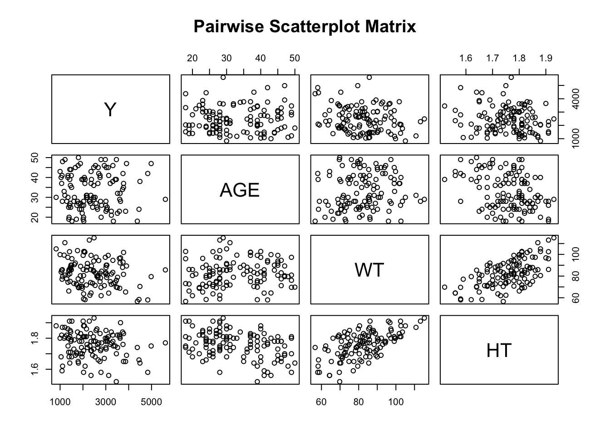
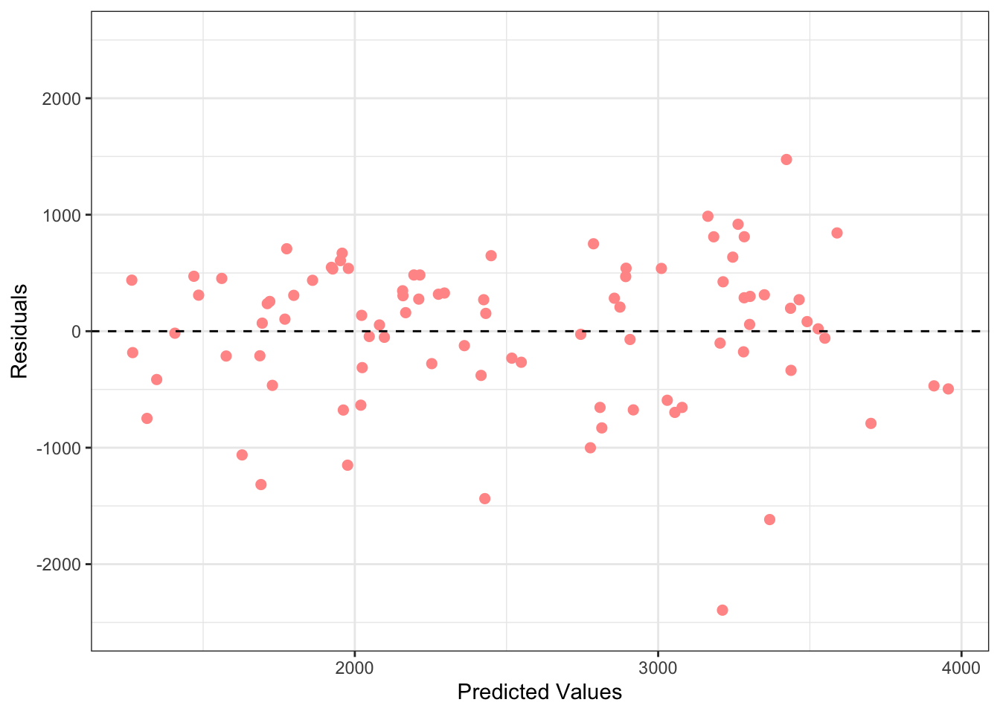
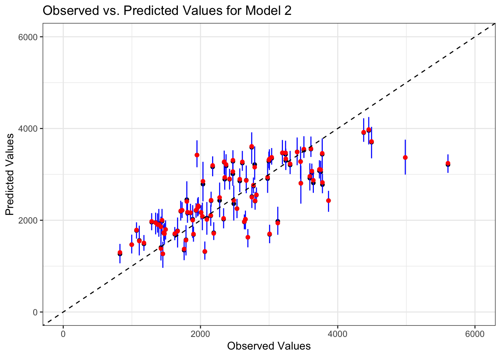

For this assignment, I will be using data on a drug candidate called Mavoglurant from the paper:
Wendling, T., Dumitras, S., Ogungbenro, K. et al. Application of a Bayesian approach to physiological modelling of mavoglurant population pharmacokinetics. J Pharmacokinet Pharmacodyn 42, 639–657 (2015). https://doi.org/10.1007/s10928-015-9430-4
Loading
First we will load the data and additional packages necessary for the assigniment.
library(readr) #for loading Excel files
Warning: package 'readr' was built under R version 4.3.2
library(dplyr) #for data processing/cleaning
Warning: package 'dplyr' was built under R version 4.3.2
Attaching package: 'dplyr'
The following objects are masked from 'package:stats':
filter, lag
The following objects are masked from 'package:base':
intersect, setdiff, setequal, union
library(tidyr) #for data processing/cleaning
Warning: package 'tidyr' was built under R version 4.3.2
library(skimr) #for nice visualization of data
Warning: package 'skimr' was built under R version 4.3.2
library(here) #to set paths
Warning: package 'here' was built under R version 4.3.2
here() starts at C:/Users/16786/MADA-Spring2024/mutsanyamuranga-MADA-portfolio
library(ggplot2) # for plots
Warning: package 'ggplot2' was built under R version 4.3.2
library(gtsummary)# for summary tables
Warning: package 'gtsummary' was built under R version 4.3.2
library(patchwork) #for combine plots
Warning: package 'patchwork' was built under R version 4.3.2
library(tidymodels)
Warning: package 'tidymodels' was built under R version 4.3.2
I will also load the data from the another paper which has used this data to ensure a level of consistency and ease of usage with the data.
# Loading Data through CSVmavodrug <--read.csv('Mavoglurant_A2121_nmpk.csv')mavodrug <-abs(mavodrug)
Exploring and Processing
#summary(rawdata)skimr::skim(mavodrug)
Data summary
Name
mavodrug
Number of rows
2678
Number of columns
17
_______________________
Column type frequency:
numeric
17
________________________
Group variables
None
Variable type: numeric
skim_variable
n_missing
complete_rate
mean
sd
p0
p25
p50
p75
p100
hist
ID
0
1
858.81
34.08
793.00
832.00
860.00
888.00
915.00
▅▆▇▇▇
CMT
0
1
1.93
0.26
1.00
2.00
2.00
2.00
2.00
▁▁▁▁▇
EVID
0
1
0.07
0.26
0.00
0.00
0.00
0.00
1.00
▇▁▁▁▁
EVI2
0
1
0.16
0.70
0.00
0.00
0.00
0.00
4.00
▇▁▁▁▁
MDV
0
1
0.09
0.29
0.00
0.00
0.00
0.00
1.00
▇▁▁▁▁
DV
0
1
179.93
226.28
0.00
23.52
74.20
283.00
1730.00
▇▂▁▁▁
LNDV
0
1
4.08
1.88
0.00
3.16
4.31
5.64
7.46
▃▃▇▇▅
AMT
0
1
2.76
10.32
0.00
0.00
0.00
0.00
50.00
▇▁▁▁▁
TIME
0
1
5.85
8.91
0.00
0.58
2.25
6.36
48.22
▇▁▁▁▁
DOSE
0
1
37.37
12.05
25.00
25.00
37.50
50.00
50.00
▇▁▁▁▇
OCC
0
1
1.38
0.49
1.00
1.00
1.00
2.00
2.00
▇▁▁▁▅
RATE
0
1
16.55
61.88
0.00
0.00
0.00
0.00
300.00
▇▁▁▁▁
AGE
0
1
32.90
8.87
18.00
26.00
31.00
40.00
50.00
▆▇▅▅▅
SEX
0
1
1.13
0.33
1.00
1.00
1.00
1.00
2.00
▇▁▁▁▁
RACE
0
1
7.41
21.97
1.00
1.00
1.00
2.00
88.00
▇▁▁▁▁
WT
0
1
83.16
12.48
56.60
73.30
82.60
90.60
115.30
▂▇▇▅▁
HT
0
1
1.76
0.08
1.52
1.71
1.78
1.82
1.93
▁▃▆▇▃
This is time-series data of drug concentrations. So for further exploration, we will consider time as the independent variable. To visualilze the data, We will plot the outcome variable (DV) as a function of time, stratified by DOSE and using ID as a grouping factor.
# Plotting Outcome Variable# Plotting Outcome Variablemavoplot1<- mavodrug %>%ggplot()+geom_line(aes(x= TIME, y=DV, group =as.factor(ID), color=as.factor(DOSE))) +facet_wrap(~DOSE, scales ="free_y")mavoplot1
There are some individuals that have received the drug more than once, indicated by having both entries with OCC=1 and OCC=2. To keep things simple, I only keep one dataset for each individual and remove all entries with OCC=2.
# Checking unique values in the 'OCC' columnunique(mavodrug$OCC)
[1] 1 2
# Filter observations with OCC = 1mavodrug_clean <- mavodrug[mavodrug$OCC ==1, ]# Check the structure of the data frame after filteringstr(mavodrug_clean)
mavoplot1.1<- mavodrug_clean %>%ggplot()+geom_line(aes(x= TIME, y=DV, group =as.factor(ID), color=as.factor(DOSE))) +facet_wrap(~DOSE, scales ="free_y")mavoplot1.1

Here, I will compute the total amount of drug for each individual (for exercise purposes only, not used in normal practices).
# Exclude observations with TIME = 0mavodrug_filtered <- mavodrug_clean %>%filter(TIME !=0)# Compute the sum of the DV variable for each individualsummarized_mavo <- mavodrug_filtered %>%group_by(ID) %>%summarize(Y =sum(DV))# Create a data frame containing only the observations where TIME == 0time_0_mavo <- mavodrug_clean %>%filter(TIME ==0)# Use the appropriate join function to combine the two data framescombined_mavo <-inner_join(summarized_mavo, time_0_mavo, by ="ID")# Check the dimensions of the resulting data framedim(time_0_mavo)
[1] 120 17
dim(combined_mavo)
[1] 120 18
# Select only the specified variables and check the structurecleaned_mavo <- combined_mavo %>%select(Y, DOSE, AGE, SEX, WT, HT) %>%#converting SEX as factorsmutate(across(c(SEX), as.factor))readr::write_rds(cleaned_mavo, "mavoglurant.rds")# Check the structure of the cleaned dataskimr::skim(cleaned_mavo)
Data summary
Name
cleaned_mavo
Number of rows
120
Number of columns
6
_______________________
Column type frequency:
factor
1
numeric
5
________________________
Group variables
None
Variable type: factor
skim_variable
n_missing
complete_rate
ordered
n_unique
top_counts
SEX
0
1
FALSE
2
1: 104, 2: 16
Variable type: numeric
skim_variable
n_missing
complete_rate
mean
sd
p0
p25
p50
p75
p100
hist
Y
0
1
2445.41
961.64
826.43
1700.53
2349.14
3050.22
5606.58
▆▇▆▂▁
DOSE
0
1
36.46
11.86
25.00
25.00
37.50
50.00
50.00
▇▁▂▁▆
AGE
0
1
33.00
8.98
18.00
26.00
31.00
40.25
50.00
▅▇▃▅▅
WT
0
1
82.55
12.52
56.60
73.18
82.10
90.10
115.30
▂▇▇▅▁
HT
0
1
1.76
0.09
1.52
1.70
1.77
1.81
1.93
▁▃▆▇▃
Summary Tables
The summary tables provide a quick overview of the numerical and categorical variables in the dataset.
mavotable1 <-tbl_summary( cleaned_mavo,by = DOSE, # Stratify summary by DOSEtype =list( DOSE ~"categorical", #Specifying DOSE as categorical SEX ~"categorical", #Specifying SES as categorical Y ~"continuous2", AGE ~"continuous2", WT ~"continuous2", HT ~"continuous2" ),statistic =list(all_continuous() ~c("{mean} ({sd})", "{min}, {max}"), # Statistics for continuous variablesall_categorical() ~"{n} ({p}%)"), # Statistics for categorical variablesmissing ="no"# Option to exclude missing data in summary)mavotable1
Characteristic
25, N = 591
37.5, N = 121
50, N = 491
Y
Mean (SD)
1,783 (601)
2,464 (488)
3,239 (787)
Range
826, 3,866
1,801, 3,463
1,949, 5,607
AGE
Mean (SD)
32 (9)
36 (10)
33 (9)
Range
18, 49
19, 50
18, 49
SEX
1
49 (83%)
10 (83%)
45 (92%)
2
10 (17%)
2 (17%)
4 (8.2%)
WT
Mean (SD)
81 (12)
81 (11)
84 (13)
Range
58, 111
64, 102
57, 115
HT
Mean (SD)
1.76 (0.09)
1.75 (0.10)
1.76 (0.08)
Range
1.56, 1.91
1.56, 1.91
1.52, 1.93
1 n (%)
Plots
These plots show the relationship between the total drug (‘Y’) and other predictors such as age, dose, and sex. Scatterplots help visualize the continuous relationship between ‘Y’ and age, while boxplots illustrate the distribution of ‘Y’ across different levels of dose and sex.
mavoplot2 <- cleaned_mavo %>%mutate(DOSE =as.factor(DOSE)) %>%# Convert DOSE to factor hereggplot(aes(x = AGE, y = Y, group = DOSE, col = DOSE)) +geom_point() +geom_smooth(method = lm, se =FALSE) +# Add a linear regression linescale_color_viridis_d(option ="plasma", end = .7)+labs(title ="Scatterplot of Y vs. AGE", x ="Age", y ="Total Drug (Y)") +theme_minimal()mavoplot2
`geom_smooth()` using formula = 'y ~ x'
mavoplot3 <- cleaned_mavo %>%mutate(DOSE =as.factor(DOSE)) %>%# Convert DOSE to factor hereggplot(aes(x = HT, y = Y, group = DOSE, col = DOSE)) +geom_point() +geom_smooth(method = lm, se =FALSE) +# Add a linear regression linescale_color_viridis_d(option ="inferno", end = .7)+labs(title ="Scatterplot of Y vs. HT", x ="HT", y ="Total Drug (Y)") +theme_minimal()mavoplot3
`geom_smooth()` using formula = 'y ~ x'
mavoplot4<-cleaned_mavo %>%mutate(DOSE =as.factor(DOSE)) %>%# Convert DOSE to factor hereggplot(aes(x = WT, y = Y, group = DOSE, col = DOSE)) +geom_point() +geom_smooth(method = lm, se =FALSE) +# Add a linear regression linescale_color_viridis_d(option ="magma", end = .7)+labs(title ="Scatterplot of Y vs. WT", x ="WT", y ="Total Drug (Y)") +theme_minimal()mavoplot4
`geom_smooth()` using formula = 'y ~ x'
mavoplot5 <- cleaned_mavo %>%mutate(DOSE =as.factor(DOSE)) %>%# Converting DOSE to factor only for the plotggplot(aes(x = DOSE, y = Y, fill = DOSE)) +geom_boxplot() +labs(title ="Distribution of Y by DOSE", x ="DOSE", y ="Y") +theme_minimal()mavoplot5
#Saving the figure in the foldermavoplot2_file <-here("fitting-exercise", "YxAgexDose.png")ggsave(filename = mavoplot2_file, plot=mavoplot2, bg="white")
Saving 7 x 5 in image
`geom_smooth()` using formula = 'y ~ x'
These histograms visualize the distributions of variables such as total drug (‘Y’), age, weight (‘WT’), and height (‘HT’). They help identify any potential outliers or unusual patterns in the data.
mavohist1 <- cleaned_mavo %>%select(Y, AGE, WT, HT) %>%pivot_longer(everything()) %>%mutate(name =factor(name, levels =c("Y", "AGE", "WT", "HT"))) %>%#Keeps the order of plotggplot(aes(x = value, fill = name)) +geom_histogram(alpha =0.5, color="black") +facet_wrap(~name, scales ="free") +scale_fill_manual(values =c("Y"="green", "AGE"="blue", "WT"="grey", "HT"="salmon")) +theme_minimal()mavohist1
`stat_bin()` using `bins = 30`. Pick better value with `binwidth`.

#Saving the figure in the foldermavohist1_file <-here("fitting-exercise", "histo_plots.png")ggsave(filename = mavohist1_file, plot=mavohist1, bg="white")
Saving 7 x 5 in image
`stat_bin()` using `bins = 30`. Pick better value with `binwidth`.
Pair/Correlation Plots
The pair plot provides a visual overview of the relationships between the variables ‘Y’, age, weight, and height. The correlation matrix quantifies the strength and direction of the linear relationships between these variables. It helps identify potential multicollinearity issues and informs feature selection for modeling purposes.
# Using the pairs function for selected variablesmavo_matrix <-pairs(cleaned_mavo[, c("Y", "AGE", "WT", "HT")], main ="Pairwise Scatterplot Matrix")

mavo_matrix
NULL
#Saving the figure in the foldercorrel_file <-here("fitting-exercise", "pair_matrix.png")ggsave(filename = correl_file, plot=mavo_matrix, bg="white")
Saving 7 x 5 in image
Model Fitting
Here, I conduct a model fitting to assess the relationship of the outcome of interest with the other variables. Tidymodels provides the functions necessary for modeling and preprocessing data. The recipe function specifies the data preprocessing steps. In this case, the outcome variable (Y) is defined as the response variable, and all other variables are considered predictors. step_dummy converts categorical predictors into dummy variables, step_center centers numeric predictors around their mean, and step_scale scales numeric predictors to have unit variance.
# Load necessary librarieslibrary(tidymodels)# Helper packageslibrary(readr) # for importing datalibrary(broom.mixed) # for converting bayesian models to tidy tibbles
Warning: package 'broom.mixed' was built under R version 4.3.3
library(dotwhisker) # for visualizing regression results
Warning: package 'dotwhisker' was built under R version 4.3.3
library(tidymodels)# Define the recipemavo_recipe <-recipe(Y ~ ., data = cleaned_mavo) %>%step_dummy(all_nominal(), -all_outcomes()) %>%step_center(all_predictors()) %>%step_scale(all_predictors())
The initial_split function divides the dataset into training and testing sets. The prop argument specifies the proportion of the data to allocate to the training set (80% in this case), and the strata argument ensures that the split is stratified based on the outcome variable (Y), which helps maintain the balance of categories in both sets.
The linear_reg function specifies the linear regression model. set_engine(“lm”) selects the linear model engine (ordinary least squares regression), and set_mode(“regression”) sets the mode of the model to regression, indicating that it predicts a continuous outcome (Y).
The workflow function creates a modeling workflow. This workflow combines the preprocessing steps defined in the recipe with the specified model. The add_recipe function adds the recipe to the workflow, and the add_model function adds the linear regression model.
# Split the data into training and testing setsset.seed(123) # for reproducibilitymavo_split <-initial_split(cleaned_mavo, prop =0.8, strata = Y)mavo_train <-training(mavo_split)mavo_test <-testing(mavo_split)# Define the linear regression model specificationlinear_spec <-linear_reg() %>%set_engine("lm") %>%set_mode("regression")# Create a workflow that incorporates the recipe and the modelmavo_workflow <-workflow() %>%add_recipe(mavo_recipe) %>%add_model(linear_spec)
The fit function fits the workflow to the training data. This step applies the preprocessing steps defined in the recipe to the training data and then fits the linear regression model to the preprocessed data.
The predict function generates predictions from the fitted model using the testing data. This step applies the preprocessing steps (from the recipe) to the testing data and then predicts the outcome variable (Y) using the fitted linear regression model.
The metrics function computes evaluation metrics for the model predictions. Here, we calculate the root mean squared error (RMSE) and the R-squared value to assess the model’s performance. The computed metrics are then extracted and stored in the variables all_rmse and all_r_squared, respectively.
# Fit the workflow to the training datamavo_fit <-fit(mavo_workflow, data = mavo_train)# Compute predictions on the testing datamavo_predictions <-predict(mavo_fit, new_data = mavo_test) %>%bind_cols(mavo_test)
The metrics function computes evaluation metrics for the model predictions. Here, we calculate the root mean squared error (RMSE) and the R-squared value to assess the model’s performance. The computed metrics are then extracted and stored in the variables all_rmse and all_r_squared, respectively.
# Compute RMSE and R-squared for the model using all predictorsall_metrics <- mavo_predictions %>%metrics(truth = Y, estimate = .pred)all_rmse <- all_metrics %>%filter(.metric =="rmse") %>%pull(.estimate)all_r_squared <- all_metrics %>%filter(.metric =="rsq") %>%pull(.estimate)
Finally, we print the computed RMSE and R-squared values to evaluate the model’s performance. These metrics provide insights into how well the linear regression model fits the data and predicts the outcome variable.
# Print RMSE and R-squared for the model using all predictorscat("Model using all predictors:\n")
The RMSE is approximately 654.5275. Lower values of RMSE indicate better model performance, as they imply smaller errors between predicted and actual values. The R-squared value is approximately 0.492, suggesting that the model explains about 49.2% of the variance in the outcome variable.
Modeling Fitting 2
The data is randomly splitted into 75% train and 25% test sets following the Data Splitting sectoin of the get Started tidymodels tutorial.Linear model is fitted on the training data. In later part of the exercise the model performance will be measured by applying it on the testing data.
rngseed <-1234
# Remove the "RACE" variable from datasetmavo2 <-subset(cleaned_mavo, select =c("Y", "DOSE", "AGE", "SEX", "WT", "HT"))
#setting the random seed for reproducibilityset.seed(rngseed)#Assig 75% of the data into the training setmavodata_split <-initial_split(mavo2, prop = .75)#Create data frames for the train and test datamavo2train_data <-training(mavodata_split)mavo2test_data <-testing(mavodata_split)#Check data structurestr(mavo2train_data)
Two linear models are fitted to the continuous outcome (Y) of the train data. The first uses only the main predictor of interest DOSE, and the second uses all predictors. A null model is also fitted.
#For reproducibilityset.seed(rngseed)#Using linear regression function from tidymodels.mavo2lin_mod <-linear_reg() %>%set_engine("lm") #Fit Y on Dosemavlinfit_dose <- mavo2lin_mod%>%fit(Y ~ DOSE, data = mavo2train_data)#Fit Y on All variables in the datamavlinfit_all <- mavo2lin_mod%>%fit(Y~., data= mavo2train_data)# Fitting a null model using tidymodels' parsnip enginemavo2null_mod <-null_model() %>%set_engine("parsnip") %>%set_mode("regression")mavlinfit_null <- mavo2null_mod %>%fit(Y ~1, data = mavo2train_data)#Use tidy for clean formatting of tabletidy(mavlinfit_dose)
Both the first and second models indicate a positve relationship between Y and DOSE. Furthermore, the second model implies that even when considering the influence of other factors, Y shows a positive correlation with AGE and a negative correlation with both WT and HT. With all other factors held constant, a change in the SEX variable from 1 to 2 is expected to result in a decrease in Y.
Root Mean Square Error
Subsequently, RMSE metrics are calculated for all models using the methods outlined by Dr. Handel for solving module 8 exercises.
#Computing the RMSE for model 1mavmetrics_dose <- mavlinfit_dose %>%predict(mavo2train_data) %>%bind_cols(mavo2train_data)%>%metrics(truth=Y, estimate=.pred)#Computing the RMSE for model 2mavmetrics_all <- mavlinfit_all %>%predict(mavo2train_data) %>%bind_cols(mavo2train_data)%>%metrics(truth=Y, estimate=.pred)#Computing the RMSE for model 3mavmetrics_null <- mavlinfit_null %>%predict(mavo2train_data) %>%bind_cols(mavo2train_data)%>%metrics(truth=Y, estimate=.pred)#print the resultsprint(mavmetrics_null)
# A tibble: 3 × 3
.metric .estimator .estimate
<chr> <chr> <dbl>
1 rmse standard 948.
2 rsq standard NA
3 mae standard 765.
print(mavmetrics_dose)
# A tibble: 3 × 3
.metric .estimator .estimate
<chr> <chr> <dbl>
1 rmse standard 703.
2 rsq standard 0.451
3 mae standard 546.
print(mavmetrics_all)
# A tibble: 3 × 3
.metric .estimator .estimate
<chr> <chr> <dbl>
1 rmse standard 627.
2 rsq standard 0.562
3 mae standard 486.
The RMSE values stand at 948, 702, and 627 for the null model, the model with only DOSE, and the model with all predictors, respectively. RMSE serves as a gauge for the average disparity between the model’s predicted values and the actual data. A lower RMSE signifies a superior fit to the data. Consequently, based on the RMSE metrics, the linear model comprising all predictor variables demonstrates superior performance compared to the other two models.
Cross-Validation
Following that, the model performance is evaluated using the cross-validation technique employing 10 folds for the two main models. This technique involves dividing the training data into 10 subsets and iteratively using 9 of them for model fitting while reserving the remaining 10% for evaluation. This process is repeated 10 times, ensuring that each subset serves as both training and evaluation data.
#setting the random seed for reproducibilityset.seed(rngseed)folds <-vfold_cv(mavo2train_data, v=10)folds
Subsequently, an object for resampling is constructed using the ‘workflow’ function from tidymodels. This function combines pre-processing, modeling, and post-processing instructions into a single entity, streamlining the analysis pipeline.
#setting the random seed for reproducibilityset.seed(rngseed)#Resampling using workflow for the model with only DOSE as predictormavlinfit_dose2 <-workflow() %>%add_model(mavo2lin_mod) %>%add_formula(Y ~ DOSE)%>%fit_resamples(folds)#Resampling using workflow for for the model with all predictorsmavlinfit_all2 <-workflow() %>%add_model(mavo2lin_mod) %>%add_formula(Y ~ .)%>%fit_resamples(folds)#extracting the performance statistics results created from the 10 assessment sets. collect_metrics(mavlinfit_dose2)
# A tibble: 2 × 6
.metric .estimator mean n std_err .config
<chr> <chr> <dbl> <int> <dbl> <chr>
1 rmse standard 691. 10 67.5 Preprocessor1_Model1
2 rsq standard 0.512 10 0.0592 Preprocessor1_Model1
collect_metrics(mavlinfit_all2)
# A tibble: 2 × 6
.metric .estimator mean n std_err .config
<chr> <chr> <dbl> <int> <dbl> <chr>
1 rmse standard 646. 10 64.8 Preprocessor1_Model1
2 rsq standard 0.573 10 0.0686 Preprocessor1_Model1
The implementation of 10-fold cross-validation resulted in a notable alteration in the RMSE values of the models. Specifically, for the model containing only the DOSE predictor, the RMSE decreased to 690 from the original 702 observed during training data utilization without cross-validation. Conversely, the model incorporating all predictors saw its RMSE increase to 645 with 10-fold cross-validation, compared to the initial value of 627 without it.
In contrast to the train/test model without cross-validation, the 10-fold cross-validation computes 10 distinct RMSE values for each sample and then averages these values. This process introduces variability among the resulting RMSEs. Further analysis indicated that the full model displays a smaller standard error of 64.81 for RMSE, in contrast to the 67.49 observed for the model including only the DOSE predictor.
CV-repeat
Lastly, the 10-fold cross-validation modeling is repeated to assess the variation in the metric when employing a different randomization seed.
#setting a different random seedset.seed(222)#Assigning 75% of the data into the training setmavodata_split2 <-initial_split(mavo2, prop = .75)#Creating data frames for the train and test datamavotrain_data2 <-training(mavodata_split2)mavotest_data2 <-testing(mavodata_split2)
Preparing the data for 10-fold cross-validation.
#setting a different random seedset.seed(222)#Creating 10 random samples of the newly generated training datafolds2 <-vfold_cv(mavotrain_data2, v=10)folds2
#setting the random seed for reproducibilityset.seed(222)#Resampling using workflow for the model with only DOSE as predictormavolinfit_dose3 <-workflow() %>%add_model(mavo2lin_mod) %>%add_formula(Y ~ DOSE)%>%fit_resamples(folds2)#Resampling using workflowfor for the model with all predictorsmavolinfit_all3 <-workflow() %>%add_model(mavo2lin_mod) %>%add_formula(Y ~ .)%>%fit_resamples(folds2)#extracting the performance statistics results created from the 10 assessment sets. collect_metrics(mavolinfit_dose3)
# A tibble: 2 × 6
.metric .estimator mean n std_err .config
<chr> <chr> <dbl> <int> <dbl> <chr>
1 rmse standard 665. 10 67.9 Preprocessor1_Model1
2 rsq standard 0.553 10 0.0608 Preprocessor1_Model1
collect_metrics(mavolinfit_all3)
# A tibble: 2 × 6
.metric .estimator mean n std_err .config
<chr> <chr> <dbl> <int> <dbl> <chr>
1 rmse standard 635. 10 65.4 Preprocessor1_Model1
2 rsq standard 0.600 10 0.0691 Preprocessor1_Model1
This section added by Kelly Cao
The following exercise involves
Model Prediction
I first create three data frames that combines the observed and predicted values from the 3 original model fits to all of the training data.
# Creating a data-frame with observed and predicted values from the model with `DOSE` as the predictordose_fit <- mavlinfit_dose %>%predict(mavo2train_data) %>%bind_cols(mavo2train_data)# Creating a data-frame with observed and predicted values from the model with everything as the predictorall_fit <- mavlinfit_all %>%predict(mavo2train_data) %>%bind_cols(mavo2train_data)# Creating a data-frame with observed and predicted values from the modelnull_fit <- mavlinfit_null %>%predict(mavo2train_data) %>%bind_cols(mavo2train_data)
Using ChatGPT, the following few lines were created to add a labeled column to each dataframe. Each data frames now have 90 observations and 8 variables each. After that, I combine all of the data frames with rbind() function. This leads to 270 observations and 8 variables, they are easily differentiable by the newly created label column.
# For the dose_fit data frame, I added a label column and dubbed it 'Dose model'dose_fit$label <-rep("Dose Model")# For all_fit data frame, , I added a label column and dubbed it 'All model'all_fit$label <-rep("All Model")# For null_fit data frame, , I added a label column and dubbed it 'Null model'null_fit$label <-rep("Null Model")# I combined the three different data frames, so I can create a graph with it with greater ease. combined_fit <-rbind(dose_fit, all_fit, null_fit)
I then use ggplot to create plot to reflect how the model predictions performs visually. The plots differentiate each of the models by the label with color and shape for the data points. The graph plots the observed value vs the predicted value. A good model would have fairly similar predicted values to its observed value. Visually, that would show a more 1:1 or linear relationship. When observing the graph we created in p1 and p2, it becomes obvious that the model with all of the predictors show the greatest predictions. The Dose model and hte Null model both shows flat lines, which is easily explained by the properties of a null model and the distinct factor level characteristics of the DOSE predictor.
# Create the ggplot figure to graph the predictive values vs the observed value for the three modelsp1 <-ggplot( combined_fit, aes(x = Y, y = .pred, color = label, shape = label)) +geom_point(size=2) +scale_color_manual(values =c("#9467bd", "#ff9896", "#17becf"))+geom_abline(intercept =0, slope =1, linetype ="dashed") +# Adding a 45-degree linelabs(x ="Observed Values", y ="Predicted Values", color ="Model", shape ="Model") +xlim(0, 5000) +ylim(0, 5000)+theme_bw()# Viewing the plotp1
The All Model does most clearly follow the 45 degree angle line compare to the other two models. Despite that, the All Model still shows some variation in the data points, which can be explained by other factors.
# Create the same ggplot figure with facetsp2 <-ggplot( combined_fit, aes(x = Y, y = .pred, color = label)) +geom_point() +scale_color_manual(values =c("#9467bd", "#ff9896", "#17becf"))+geom_abline(intercept =0, slope =1, linetype ="dashed") +# Adding a 45-degree linelabs(x ="Observed Values", y ="Predicted Values", color ="Model", shape ="Model") +theme_minimal() +facet_wrap(~ label, scales ="free")+# Faceting by label (model)xlim(0, 5000) +ylim(0, 5000)# Viewing the plotp2
I start with creating a column for residuals in the all_fit dataframe. I then plot the residuals versus the predicted to observe the patterns. The plot clearly shows a greater number of negative values compared to positive values, showing that there may be other factos still playing a role in affecting the data.
all_fit <- all_fit %>%mutate(residuals = .pred - Y)p3 <-ggplot(all_fit, aes(x = .pred, y = residuals)) +geom_point(size =2, color ="#ff9896") +geom_hline(yintercept =0, linetype ="dashed", color ="black") +# Adding a line at y = 0labs(x ="Predicted Values", y ="Residuals") +# Corrected axis labelsylim(-2500, 2500) +theme_bw()p3

Model Prediction and Uncertainty
The following would be an attempt at calculating for uncertainty. This will be attempted by using 100 bootstrap samples. The following lines sets up a seed and creates 100 bootstraps into a object called bootstrap_100.
# Set Seed for reproducibilityset.seed(rngseed)# Creating 100 bootstraps using the training databootstrap_100 <-bootstraps(mavo2train_data, times=100)
I created a function called fit_and_predict that allowed me to loop through each bootstrap and apply a linear model to each of them. A list of prediction is then generated for each of the bootstrap based on the training data. The predictions are then all compiled into a list. I applied that function to my object bootstrap_100 and set the output of that to prediction_list. I then converted that list to a matrix, which allowed me to run the code provided by Dr.Handel on the MADA website. That code calculated the confidence levels and median of the prediction variable.
fit_and_predict <-function(bootstrap_100) {# Create an empty list to store predictions for all of the boots prediction_list <-list()# Loop through each bootstrap samplefor (i in1:length(bootstrap_100$splits)) {# Placing the current [i] bootstrap sample to 'bootstrap_sample object bootstrap_sample <-analysis(bootstrap_100$splits[[i]])# Fit a linear model linear_model <-lm(Y ~ ., data = bootstrap_sample)# Make predictions on the original train_data boot_prediction <-predict(linear_model, newdata = mavo2train_data)# Store predictions in the empty list created above prediction_list[[i]] <- boot_prediction }return(prediction_list)}# Apply fit_and_predict function directly on bootstrap samples. This will cycle the function through each bootstrap samplepredictions_list <-fit_and_predict(bootstrap_100)# Verifying it worked. Running this should give me the 90 predicted observation for the first bootstrap samplepredictions_list[1]
# The following line was provided by Dr. Handel. This can extract a single (the 1st one in this case) bootstrap sample into a data frame called dat_sampledat_sample = rsample::analysis(bootstrap_100$splits[[1]])# I then converted the list to matrix, so the following code can be ran.predictions_matrix <-do.call(rbind, predictions_list)# The following code was based off of Dr. Handel's codepredictions <- predictions_matrix |>apply(2, quantile, c(0.055, 0.5, 0.945)) |>t()
I then utilized ChatGPT to create the general gist of dataframe and plot below and editted it accordingly. I applied the observed values of the All_model to Observed and the predicted value to PointEstimate. The LowerBound, UpperBound, and the Median were all procured from the prediction list created from the function applied to the bootstrap.
# Create a data frame containing the observed values and predictionsplot_data <-data.frame(Observed = all_fit$Y, # Observed valuesPointEstimate = all_fit$.pred, # Point estimate/ Original PredictionMedian = predictions[, 2], # MedianLowerBound = predictions[, 1], # Lower confidence boundUpperBound = predictions[, 3] # Upper confidence bound)# Create the plot with the X-axis being the original observed values on the x-axis and the point estimate on the y-axis. The original predictors are color coded in black. The median is in red, and the error bars(based on the UpperBound and LowerBound) or the confidence interval is in blue. p4 <-ggplot(plot_data, aes(x = Observed, y = PointEstimate)) +geom_point(color ="black") +# Point estimate/ original observed predictionsgeom_errorbar(aes(ymin = LowerBound, ymax = UpperBound), width =0.1, color ="blue") +# Confidence intervalgeom_point(aes(y = Median), color ="red") +# Mediangeom_abline(slope =1, intercept =0, linetype ="dashed", color ="black") +# 45 degree linelabs(x ="Observed Values", y ="Predicted Values", title ="Observed vs. Predicted Values for Model 2") +xlim(0, 6000) +ylim(0, 6000)+theme_bw() # Theme# Print the plotprint(p4)

When observing the graph, there are a lot of overlaps between the prediction medians (sourced from the bootstrap samples) and the observed values (provided from the original fit). Despite it’s generally good fit, there are still a few signs of scattering, which might indicate other factors might still be influencing the data. Both the newly provided predicted medians and original follows the 45 degree angle line quite well. This shows that both that the predicted values and observed values from the original fit and the bootstrap fits are both fairly similar, which indicates a sign of a good model.